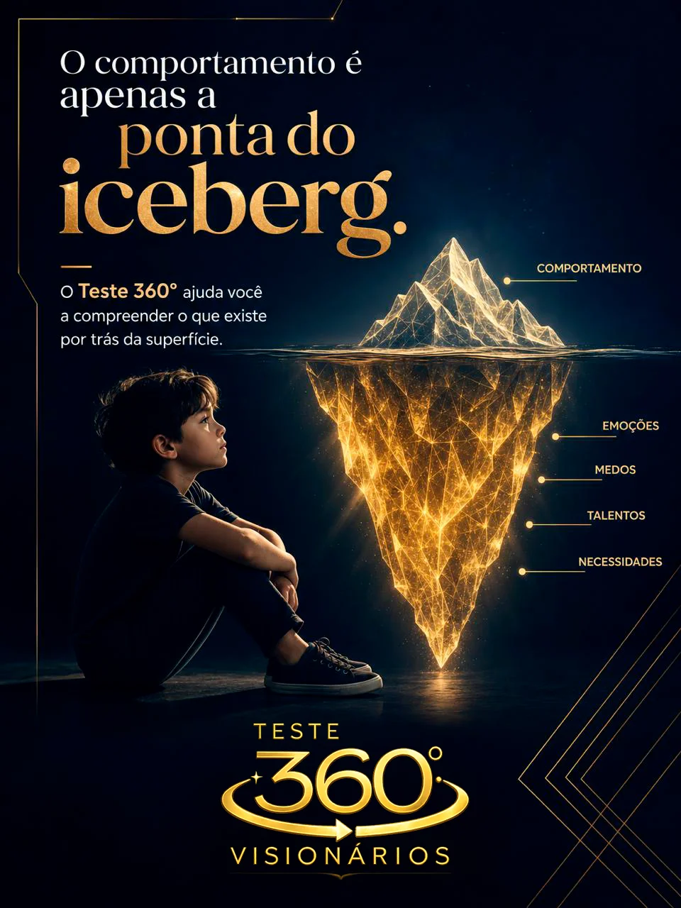
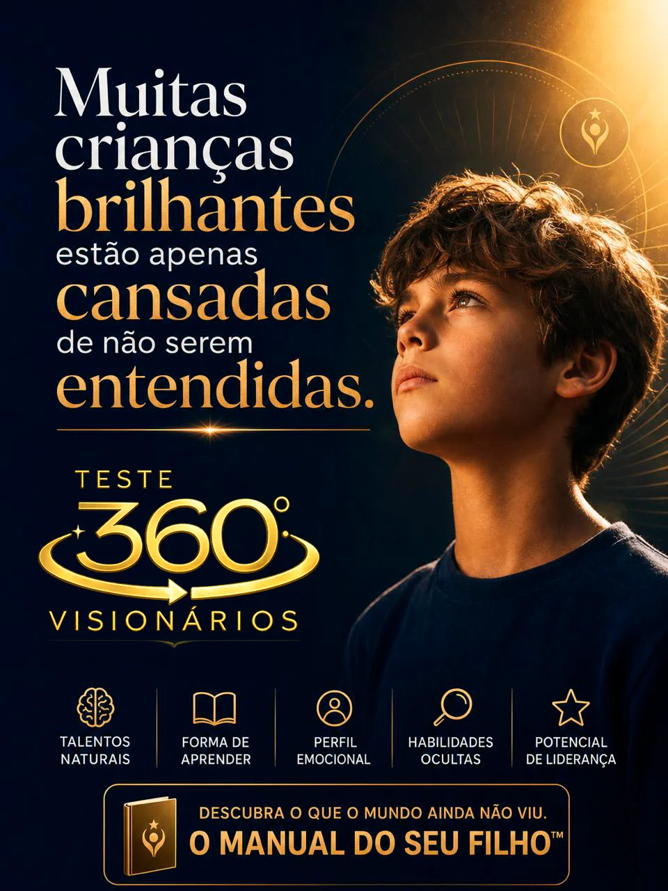
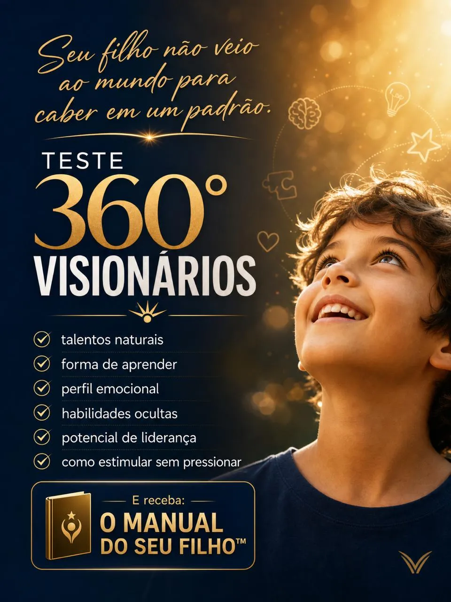

Descubra como decodificar o comportamento, os gatilhos emocionais e os talentos inatos dele. Um mapeamento completo feito por você para substituir o atrito pela sinergia dentro do seu lar.
O Teste 360° é a ferramenta que traduz para você o que seu filho não consegue dizer com palavras, tirando a culpa e abrindo espaço para a intuição materna.

Substitua os confrontos diários por direcionamento assertivo. Ao realizar este mapeamento, o Método Visionários 360° entrega em suas mãos a "bússola" exata para decifrar os gatilhos, os pontos fortes e a forma única como seu filho enxerga o mundo.
Visualização clara do mapeamento e do relatório comportamental que você irá receber.

Identifique a raiz das frustrações e das mudanças de humor dele, descobrindo exatamente como suprir sua necessidade de validação e segurança.
Enxergue as inclinações naturais e os talentos inatos do seu filho, permitindo que você o apoie e o prepare para o futuro respeitando sua essência.
Entenda onde os perfis de vocês se chocam e aprenda a linguagem de comunicação exata para desarmar conflitos antes que eles comecem.
Você responde a um formulário interativo e dinâmico sobre os comportamentos e reações do seu filho, baseado em neurociência.
Nosso sistema processa suas respostas e cruza os dados do perfil comportamental dele para mapear forças e fraquezas.
Você recebe o Relatório 360° completo — um verdadeiro manual de instruções moldado especificamente para as características dele.
Histórias de mães, pais e educadores que mudaram suas realidades.

Dê o primeiro passo para transformar a dinâmica com quem você mais ama. O tempo da infância e da adolescência passa rápido — invista em decodificar o seu filho hoje.